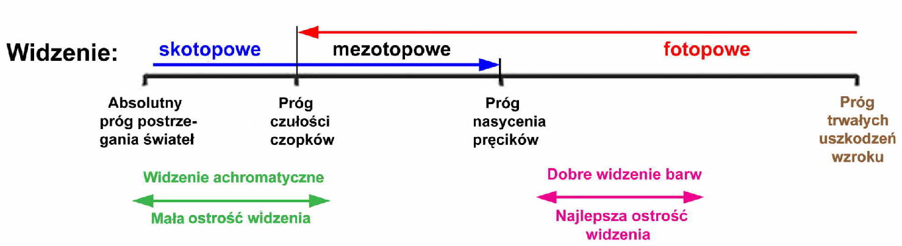
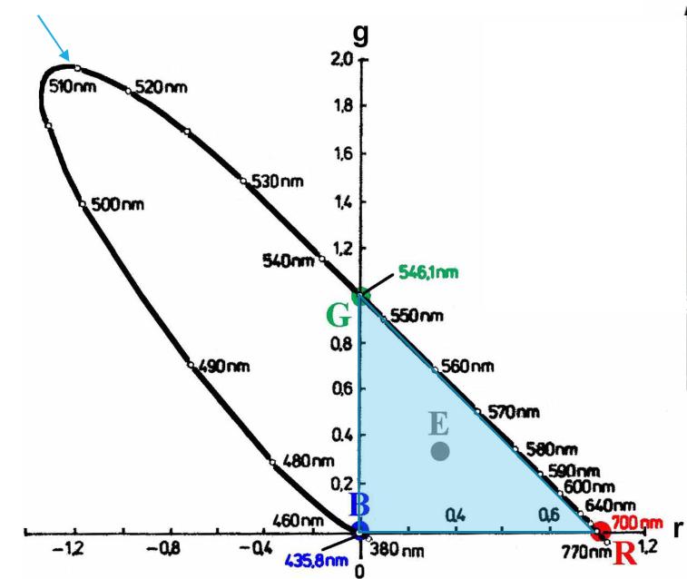
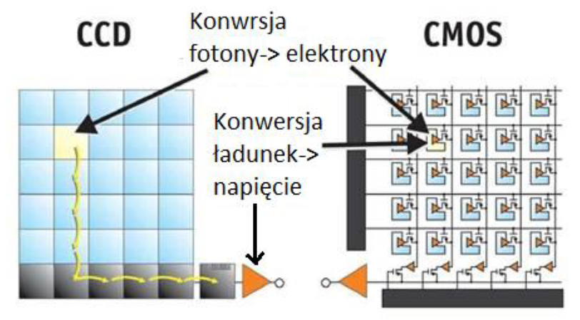

Jeśli strona była dla Ciebie pomocna, możesz wesprzeć mnie w jej utrzymaniu na buycoffee.to/mgarbowski
Światło, obraz cyfrowy, percepcja
Percepcja świateł
- Zakres widzialny 380nm-760nm
- Na wrażenie barwy mają wpływ 3 czynniki
- odcień - długość fali
- nasycenie - czystość barwy, stopień zbliżenia do barw widmowych
- jasność
Zakres postrzegania luminancji
- Luminancja bezwzględna \([\log cd/m^2]\)
- Lumeny nie odnoszą się do energii, tylko postrzeganej jasności światła

Postrzeganie kontrastów
- Kontrast - różnica jaskrawości
- To czy zmiana jest dostrzegalna zależy od bazowej jasności
- Logarytmiczne prawo Webera-Fechnera
- przyrost bodźca fizycznego konieczny do wywołania uświadomionej zmiany wrażenia \(B\) jest proporcjonalny do bodźca wywołującego \(L\)
- \(dB = a \cdot \frac{dL}{L} \implies B = a \log L + B_0\)
- \(B\) - zmiana wrażenia
- \(L\) - jasność
- Lepszym przybliżeniem może być potęgowe prawo Stevens’a
- \(B = m \sqrt[3]{L} - n\)
- Korekcja gamma naśladuje postrzeganie kontrastów
- Nie na każdym zakresie czułość oka jest jednakowa
Dostrzeganie różnic barw
- Próg dostrzegalności zmian nasycenia - max dla barwy zielono-żółtej
- Próg dostrzegalności zmian odcienia barwy - minima dla barwy niebieskiej, czerwonej i turkusowej
Ostrość widzenia świateł
- Naturalne ograniczenia
- Dyfrakcja światła związana ze średnicą otworu źrenicy
- Dodają się do siebie fazy tej samej fali
- Dwa obiekty będą rozróżnialne jeśli maksimum jednego przypada na minimum drugiego
- Rozmiar i odległość sąsiednich receptorów na siatkówce
- Liczba receptorów związanych z jednym neuronem
- Niedokładność układu optycznego oka
- Rozpraszanie światła wewnątrz oka
Ostrość widzenia barw świateł
- Zależy od barwy i jasności
- Oko jest bardziej czułe na zmiany luminancji niż chrominancji
Składowe trójchromatyczne RGB
- Określają w jakich ilościach należy zsumować jednostki poszczególnych świateł podstawowych dla uzyskania wrażenia światła identycznego z mierzonym F
- Skalowane względem strumienia światła F
- Niosą informację o jaskrawości (cecha ilościowa) i wrażeniu barwy (cecha jakościowa)
- \(\Phi_F = r' \Phi_R + g' \Phi_G +
b' \Phi_B\)
- \(\Phi_X\) - światła uzyskane dla bieli równoenergetycznej
- \(m = r' + g' + b'\)
- \(m\) - moduł światła, miara wrażenia jaskrawości świateł o tym samym wrażeniu barwy
Kolorymetr trójchromatyczny addytywny
- Obserwator patrzy na trójkąt odbijający z jednej strony światło referencyjne a z drugiej jednostkowe światła podstawowe (przeskalowane wartościami rgb)
- Dąży się do osiągnięcia tego samego wrażenia barwy i jasności co odpowiednie sumowanie świateł kolorów podstawowych
- Nie wszystkie długości da się w taki sposób zsyntetyzować
- Żeby dostać pełen zakres trzeba by odjąć światło
- można to osiągnąć przez dodanie odpowiedniej składowej po drugiej stronie(??)
Wykres chromatycznosci
- Założenie stałej jasności \(m = r' + g' + b' = 1\)
- Możliwe do zsyntezowania przez RGB barwy tylko w trójkącie na wykresie

Przestrzeń kolorów CIE XYZ
- Pozwala opisać wszystkie kolory widzialne z nadmiarem (więcej niż samo światło widzialne i w ogóle fizyczne)
- Rozpina przestrzeń - trójkąt zawierający całą figurę na wykresie chromatyczności
Mieszanie barw
- Sumowanie składowych w każdej przestrzeni liniowo zależnej
- Jasność jest addytywna
Bezwładność postrzegania światła
- Częstotliwość zaniku migotania (CFF)
- \(f = a + b \log L\)
- Częstotliwość krytyczna - powyżej postrzegamy światło ciągłe
- zależy od jasności
- Wrażenie luminancji światła zmiennego w czasie z częstotliwością większą od krytycznej jest równe wartości średniej za okres
- Jednoczesne lub kolejne pobudzanie oka z częstotliwością większą od krytycznej światłami o różnych barwach dalej wrażenie barwy będącej trójchromatyczną syntezą addytywną pobudzających świateł
Ostrość widzenia obiektów ruchomych
- Im szybszy ruch tym większy rozmiar dostrzegalnych szczegółów
- Większy dla ruchu poziomego niż pionowego
Zjawisko fotoelektryczne wewnętrzne
- Generowanie pary elektron-dziura w półprzewodniku pod wpływem absorpcji światła
- Półprzewodnik jest polaryzowany (elektroda dodatnia)
- elektrony po pojawieniu się zmierzają do elektrody dodatniej, a dziury do ujemnej
- liczba zgromadzonych elektronów jest proporcjonalna do ilośći światła
- elektrony się gromadzą a nie skutkują przepływem prądu - potrzebny izolator
- pary w końcu zanikają, trzeba je wyprowadzić zanim zaczną rekombinować
Przetwornik CCD
- Charge Coupled Device
- Do elektrod przykłada się różne napięcia
- można przemieścić elektrony z jednego miejsca w drugie
- Transport międzyramkowy i międzyliniowy
- międzyliniowy nie jest zakłócany światłem padającym na elementy
Przetworniki CMOS
- Complementary Metal Oxide Semiconductor
- Unikają transportu ładunków między elementami matrycy
- Wybieranie (adresowanie w macierzy) wiersza i kolumny
- większa dowolność w próbkowaniu
- można uzyskać większą częstotliwość
- Łatwe do integrowania z układami tranzystorowymi CMOS
- Mniejsza zużywana moc
- mniejsze pojemności
- Elastyczny odczyt
- Mniejsza powierzchnia światłoczuła
- większy wpływ szumów
- Większe rozrzuty parametrów
- Element CMOS
- dwa klucze tranzystorowe (Reset, Read)
- ładowanie do ustalonego napięcia
- rozładowanie przez fotony proporcjonalnie do ich ilości
Przetworniki
- Soczewki mogą kierować światło na elementy światłoczułe
- poprawa sosunku sygnał-szum (SNR)
- Przetwornik nie odróżnia barwy, reaguje na energię
- Żeby mieć rozróżnienie stosuje się filtry barwne, które przepuszczają tylko określone podpasma

Wyświetlanie
- Warunki konieczne żeby dobrze działał
- czystość świecenia (najlepiej jedna długość fali) źródeł
- zgodność kolorymetryczna
- zbieżność geometryczna - zbiegają się w tym samym punkcie piksela
- równowaga bieli - kolor biały kiedy wszystki składowe równe 1
Bierne
- Anizotropia optyczna
- obrót płaszczyzny polaryzacji światła
- zmiana współczynnika odbicia światła
- Interferencja fal świetlnych
- Mechano-optyka
- Elektroforeza
- Elektrochromia
- Elektrozwilżalność
Aktywne
- Elektronoluminescencja
- Wyładowanie jarzeniowe
- Elektroluminescencja
- Termoluminescencja
Przetworniki syntezujące
Aktywne
- Lampa kineskopowa (Cathode Ray Tube)
- Wyświetlacz plazmowy (Plasma Display Panel)
- Wyświetlacz z organicznymi diodami elektroluminescencyjnymi (OLED)
- Field Emission Display (FED)
Pasywne
- Transmisyjne
- wyświetlacz ciekłokrystaliczny (LCD)
- Odbiciowe
- wyświetlacz ciekłokrystaliczny (LCD)
- Digital Micromirror Device (DMD)
Wyświetlacz ciekłokrystaliczny
- Piksel może być w jednym z dwóch stanów
- włączony/przezroczysty
- wyłączony/nieprzezroczysty
- Odcienie szarości/barw uzyskiwane przez pobudzanie pikseli PWM
- Piksele włączane/wyłączane sekwencyjnie z wykorzystaniem
- macierzy pasywnej - konieczne utrzymywanie pola elektrycznego na elektrodach
- macierzy aktywnej z tranzystorami (Thin-Film Transistor, TFT)
- Podświetlanie
- lampy fluorescencyjne
- diody elektroluminescencyjne
- synteza jednoczesna lub kolejna
- kolor biały, RGB lub niebieski/UV
- rozmieszczenie - krawędź lub bezpośrednie
Obraz cyfrowy
- Dwuwymiarowa tablica próbek (pikseli) wynikająca z dyskretyzacji obrazu
- Dyskretyzacja czasowa
- Dyskretyzacja przestrzenna
- Kwantyzacja wartości, najczęściej po 8 bitów na kolor (256 poziomów)
- Rozdzielczość przestrzenna charakteryzowana przez
- rozdzielczość pionową - liczba linii
- rozdzielczość poziomą - liczba pikseli w linii
- Rozdzielczość wartości
- liczba różnych poziomów wartości jaką mogą przyjąć piksele
- Rozdzielczość bitowa
- liczba bitów przeznaczona na zapis wartości piksela
- Próbkowanie
- ograniczenie ze względu na liczbę pikseli
- pojawia się aliasing - rozwiązywane przez odpowiednie filtrowanie
Przestrzenie barw
Przestrzeń RGB
- Barwy podstawowe - red, green, blue
- Każdy piksel obrazu opisywany prze trójkę wartości
- Barwy uzyskiwane w wyniku addytywnego mieeszania barw podstawowych w różnych proporcjach (mieszanie świateł)
- Wszysktim możliwym do uzyskania barwom odpowiadają pnkty sześcianu rozpiętego na osiach barw podstawowych
Przestrzeń CMY
- Barwy podstawowe - cyan, magenta, yellow
- Barwy uzyskiwane w wyniku subtraktywnego usuwania barw RGB ze
światła białego (mieszanie farb)
- przedmiot pokryty żółtą farbą pochłania składowe światła barwy niebieskiej
- W drukarkach, ploterach
- W praktyce używana dodatkowo farba czarna (key colour)
Przestrzeń HSV
- Odcień (hue)
- \(0\textdegree\) - R
- \(120 \textdegree\) - G
- \(240 \textdegree\) - B
- Nasycenie (saturation)
- 0 - barwy achromatyczne
- 1 - barwy czyste
- Wartość (value)
- 0 - czerń
- 1 - maksymalna jasność
- Przekształcenie RGB do cylindra
- Stożek - reprezentacja naturalna
- Walec - reprezentacja matematyczna
Przestrzeń YCbCr
- Składowe
- luminancja Y
- chrominancja Cb (B-Y)
- chrominancja Cr (R-Y)
- Chrominnacje mają mniejszą zmienność
- dodatkowo można podpróbkowywać ze względu na mniejszą czułość oka
- Nie trzeba składowych chrominancyjnych próbkować z taką rozdzielczością jak luminancyjnych
- Stosowany w systemach telewizji, kompresji obrazów i sekwencji wideo - dekorelacja
Przestrzeń YCoCg
- Składowe
- luminancja Y
- chrominancja Co (O-Y)
- chrominancja Cg (G-Y)
- Alternatywa dla YCbCr w najnowszych standardach kompresji
Schematy próbkowania chrominancji
- 4:4:4
- 24 bity na piksel
- próbkowanie wszystkich składowych jednakowo
- 4:2:2
- 16 bitów na piksel
- kolumna próbkowania wszystkich składowych
- kolumna próbkowania tylko luminancji
- 4:1:1
- 12 bitów na piksel
- kolumna próbkowania wszystkich składowych
- 3 kolumny próbkowania tylko luminancji
- 4:2:0
- 12 bitów na piksel
- siatka kwadratów 2x2
- w rogu próbkowane wszystkie składowe
- w pozostałych 3 tylko luminancja
Miary jakości obrazu
Subiektywne
- Psychowizualne testy porównawcze ze wskazywaniem obrazów o lepszej jakości
- Testerzy oceniają na bieżąco
- Oceniają od najlepszego do najgorszego
- Klasyfikacja ocen w skali (np. od 1 do 5)
Obiektywne
- Średnia różnica \(MAD = \frac{1}{MN}\sum_{x,y}|f(x,y)-\hat{f}(x,y)|\)
- Błąd średniokwadratowy \(MSE = \frac{1}{MN}\sum_{x,y} [f(x,y)-\hat{f}(x,y)]^2\)
- Norma Lp (Minkowskiego) \(L_p = (\frac{1}{MN}\sum_{x,y}|f(x,y)-\hat{f}(x,y)|^p)^{1/p}\)
- Stosunek sygnału do szumu \(SNR = 10\log_{10}\frac{\sum_{x,y}f^2(x,y)}{\sum_{x,y}[f(x,y)-\hat{f}(x,y)]^2}\)
- Szczytowy syosunek sygnału do szumu \(PSNR
=
10\log_{10}\frac{\sum_{x,y}f_{max}^2(x,y)}{\sum_{x,y}[f(x,y)-\hat{f}(x,y)]^2}\)
- taka sama wartość przy zwiększeniu wszystkich pikseli o 2, co zwiększenie wybranych pikseli o 32
- miary obiektywne są niedoskonałe